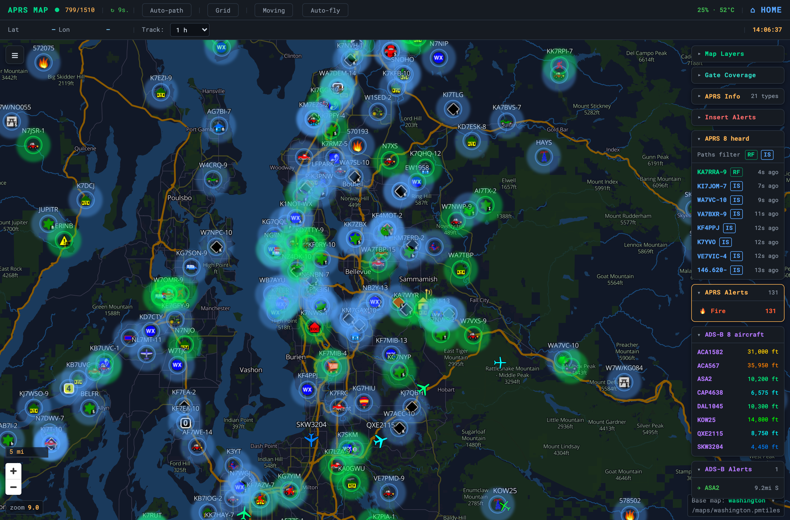

Offline Maps
OpenStreetMap vector tiles from a single PMTiles file — no tile server

Vector maps rendered in the browser with MapLibre GL. A
PMTiles file is a single file containing an entire regional map —
think offline Google Maps for your region in one .pmtiles. The browser
reads it directly via HTTP range requests: no internet, no tile server, no database.
Get a PMTiles file
| A — GrayWolf | If GrayWolf is installed, use its built-in downloader (Maps → Offline Maps → Add a region). It saves to /var/lib/graywolf/tiles/, which the OASIS Load maps button already knows about — no copying. |
| B — Protomaps | Extract your region from the free daily planet build with pmtiles extract and a bounding box — a US state is typically 500 MB–2 GB. |
| C — Convert MBTiles | Already have an MBTiles archive? python3 maps/convert-mbtiles.py region.mbtiles (OMT v3.x schema). |
Deploy
Drop the .pmtiles file into maps/ on the Pi — the map opens
at the archive’s own centre/zoom, no config needed. Or keep files on a USB stick and
use the Load maps button to browse and load them at runtime. Readable
mount points are controlled by OASIS_MAP_ROOTS (default /media,
/mnt, /run/media, /Volumes, plus maps/).
The map tile server is part of the OASIS Flask app, not an external service — so offline maps work everywhere OASIS runs, including the USB bundle. Map data is licensed under ODbL (OpenStreetMap).
After adding a .pmtiles file or updating app.py, restart the server — new routes and files won’t load until it restarts.
Troubleshooting
| Symptom | Cause & fix |
|---|---|
| The map is blank | No PMTiles file covers the view, or WebGL is off in the browser. Add a region and confirm the base-map selector points at a present .pmtiles. |
| Tiles load slowly | Large archives are streamed by HTTP range reads. An SSD over USB beats the SD card for big regions. |
| Wrong area shown | Switch regions with the Base map selector (bottom-right); each region is a separate PMTiles archive. |